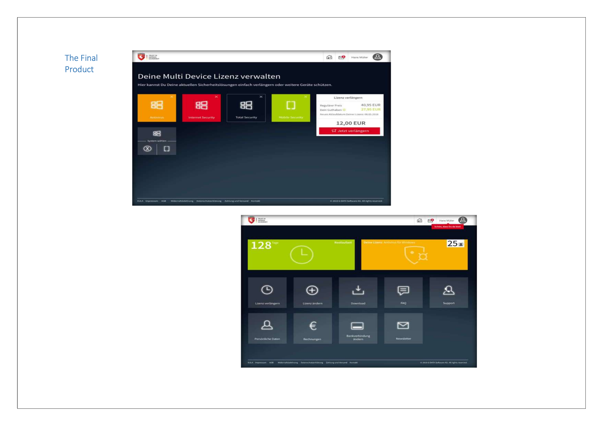
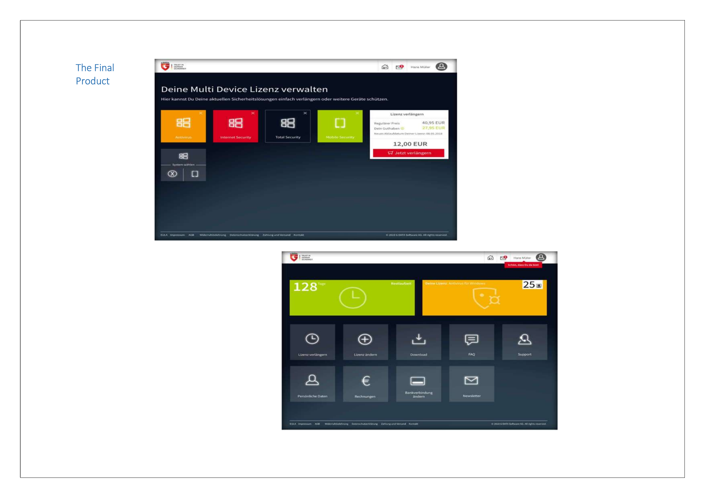

Mobile Workflow Redesign
Redesigned mobile workflows to improve task efficiency, reduce friction, and deliver a delightful user experience for enterprise users.
Project Overview
The mobile workflow app was designed to help enterprise users manage daily tasks on the go. However, the existing workflows were unintuitive, requiring too many taps to complete simple actions.
The redesign simplified critical workflows, introduced quick actions, and provided a consistent mobile-first experience aligned with modern app design standards.
My Role & Responsibilities
- Product Leadership: Defined the vision and strategy for mobile workflows.
- User Research: Interviewed enterprise users to identify pain points in daily workflows.
- Workflow Redesign: Created streamlined task flows with fewer steps and improved clarity.
- Cross-Functional Collaboration: Coordinated with design and engineering teams for implementation.
- Metrics Tracking: Measured workflow completion times, error rates, and user satisfaction.
Key Challenges
- Overly complex workflows with redundant steps.
- High learning curve for new mobile users.
- Inconsistent design patterns across workflows.
Solutions & Impact
Introduced quick-action shortcuts, simplified workflows, and unified design patterns. Reduced task completion times significantly and improved overall user satisfaction.
The redesign achieved a 50% reduction in workflow completion time, a 65% improvement in adoption, and a 92% satisfaction rate.
Visuals & Prototypes
 



Learnings & Future Directions
This project reinforced the importance of designing for mobile-first enterprise use. Future opportunities include AI-powered task recommendations and voice-driven workflow execution.